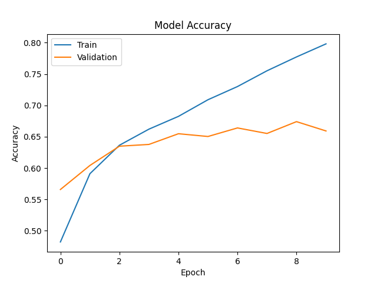
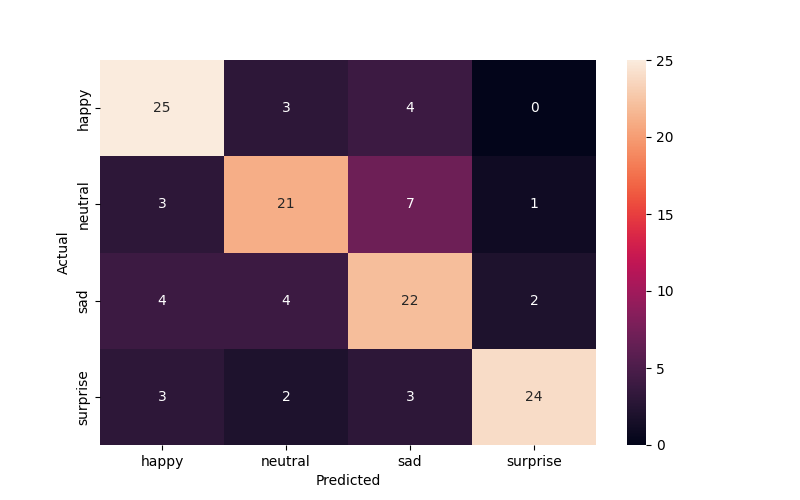

        <html>
        <head><title>Model Summary - 2024-03-03 15:34:39</title></head>
        <body>
        <h1>Model Summary</h1>
        <pre>Model: "sequential"
_________________________________________________________________
 Layer (type)                Output Shape              Param #   
=================================================================
 conv2d (Conv2D)             (None, 46, 46, 32)        320       
                                                                 
 max_pooling2d (MaxPooling2  (None, 23, 23, 32)        0         
 D)                                                              
                                                                 
 conv2d_1 (Conv2D)           (None, 21, 21, 64)        18496     
                                                                 
 max_pooling2d_1 (MaxPoolin  (None, 10, 10, 64)        0         
 g2D)                                                            
                                                                 
 flatten (Flatten)           (None, 6400)              0         
                                                                 
 dense (Dense)               (None, 64)                409664    
                                                                 
 dense_1 (Dense)             (None, 4)                 260       
                                                                 
=================================================================
Total params: 428740 (1.64 MB)
Trainable params: 428740 (1.64 MB)
Non-trainable params: 0 (0.00 Byte)
_________________________________________________________________
</pre>
        <h2>Test Accuracy</h2>
        <p>
1/4 [======>.......................] - ETA: 0s - loss: 0.7126 - accuracy: 0.7188
4/4 [==============================] - 0s 1ms/step - loss: 0.8515 - accuracy: 0.7188
</p>
        <h2>Accuracy Plot</h2>
        
        <h2>Classification Report</h2>
        <pre>              precision    recall  f1-score   support

       happy       0.71      0.78      0.75        32
     neutral       0.70      0.66      0.68        32
         sad       0.61      0.69      0.65        32
    surprise       0.89      0.75      0.81        32

    accuracy                           0.72       128
   macro avg       0.73      0.72      0.72       128
weighted avg       0.73      0.72      0.72       128

</pre>
        <h2>History</h2>
        <pre>Epoch 1: loss: 1.1574, accuracy: 0.4821, val_loss: 1.0398, val_accuracy: 0.5658
Epoch 2: loss: 0.9676, accuracy: 0.5910, val_loss: 0.9511, val_accuracy: 0.6042
Epoch 3: loss: 0.8809, accuracy: 0.6364, val_loss: 0.8931, val_accuracy: 0.6349
Epoch 4: loss: 0.8227, accuracy: 0.6621, val_loss: 0.8804, val_accuracy: 0.6377
Epoch 5: loss: 0.7691, accuracy: 0.6825, val_loss: 0.8436, val_accuracy: 0.6548
Epoch 6: loss: 0.7195, accuracy: 0.7090, val_loss: 0.8908, val_accuracy: 0.6504
Epoch 7: loss: 0.6720, accuracy: 0.7301, val_loss: 0.8425, val_accuracy: 0.6641
Epoch 8: loss: 0.6148, accuracy: 0.7552, val_loss: 0.8956, val_accuracy: 0.6552
Epoch 9: loss: 0.5667, accuracy: 0.7774, val_loss: 0.8800, val_accuracy: 0.6741
Epoch 10: loss: 0.5138, accuracy: 0.7982, val_loss: 0.9278, val_accuracy: 0.6592
</pre>
        <h2>Confusion Matrix</h2>
        
        </body>
        </html>
        